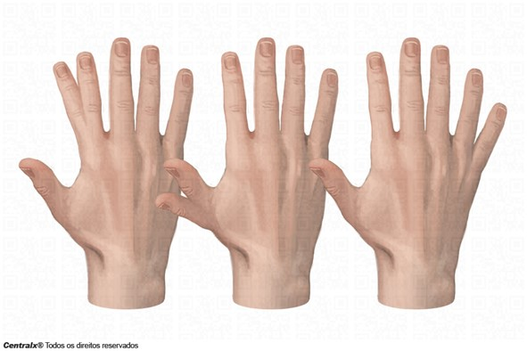

Polidactilia é uma deformidade congênita causada por uma alteração genética em que o paciente desenvolve dedos extras nas mãos ou nos pés.
Essa anomalia é uma deformidade congênita, ou seja, alterações estruturais ou funcionais que acontecem durante a gestação que podem ser detectadas antes, durante ou depois do nascimento, e é causada pela manifestação de um alelo autossômico dominante com penetrância completa.
Os pacientes com dedos extras nas mãos são chamados de quirodáctilos, enquanto nos pés são chamados de pododáctilos, além disso, podem ser classificadas pelo local onde esses dedos surgem.
Na polidactilia pré-axial, os dedos extras aparecem ao lado do dedo polegar, na mão ou nos pés. Na polidactilia central, os dedos extras surgem no meio dos dedos regulares do pé. Já a polidactilia pós-axial faz com que novos dedos dos pés surjam depois do dedo mindinho.
Os dedos extras podem ser completamente formados, apresentando ossos adicionais e articulações bem formadas, ou podem ser incompletos, sendo apenas um apêndice, ligado ao corpo por um pouco de pele.
A grande maioria dos pacientes com polidactilia consegue viver bem, precisando apenas de algumas adaptações pontuais, como uso de sapatos abertos ou mais largos, mas, caso os dedos extras incomodem o paciente, é possível realizar um procedimento cirúrgico para removê-los.